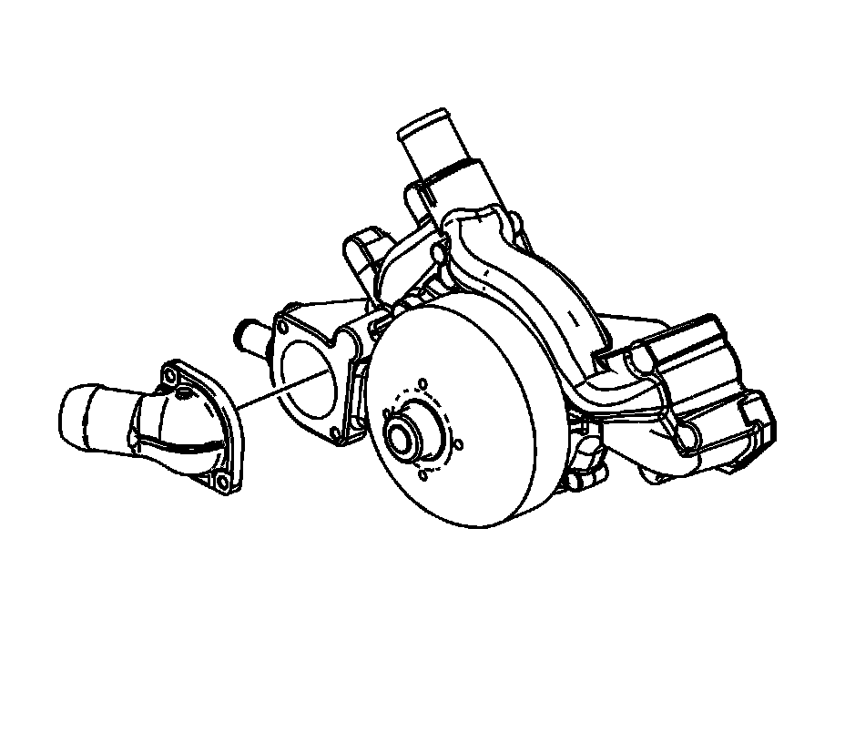

65. Water Pump Cleaning and Inspection
Water Pump Cleaning and Inspection

1. Remove the old gasket from the water pump sealing surfaces. Refer to Replacing Engine Gaskets.
2. Clean all excess dirt and debris from the water pump housing.
3. Inspect the water pump for the following conditions:
^ Gasket and hose sealing surfaces for excessive scratches or gouging
^ Restrictions within the internal coolant passages
^ Excessive side-to-side play in the pulley shaft
^ Leakage at the water inlet housing or rear cover
^ Leakage at the water pump vent hole
A stain around the vent hole is acceptable. If leakage, dripping, occurs with the engine running and the cooling system pressurized, replace the water pump.
^ Wear or damage in the belt tracking area of the pulley